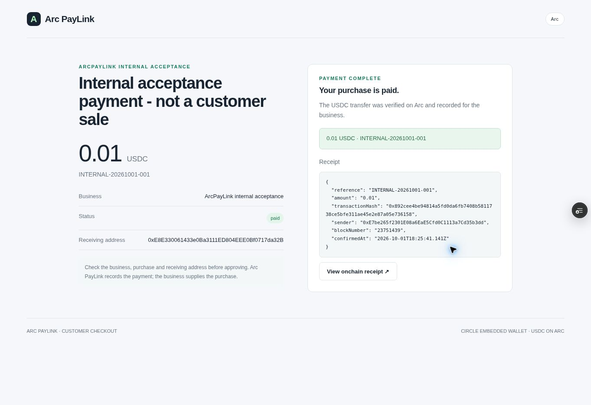

01 / COMPANY
Create the order
Set the amount, receiving address and customer reference. Share the purchase link.
A sender funds an isolated Arc USDC escrow and shares a private, single-use claim link. The recipient signs in with Google, creates or recovers a user-controlled Circle smart account and explicitly approves receipt of the funded payment. No prior crypto-wallet setup is required. The recipient can return to view or send received USDC.
The original product includes exact funding and settlement checks, request tracking, address-bound EIP-1271 claims and encrypted creator recovery. Payment verification identifies partial, duplicate and mismatched settlement; recovery does not automatically move funds. Open the original sender flow · Original mainnet evidence.
Businesses create customer checkout links and track orders, due dates and verified receipts. Revocable, scoped read-only MCP tools let their agents inspect the same evidence without authority to move funds. Purchase checkout is distinct from receiving a funded claim: customers must have USDC and approve payment. Card/fiat checkout is not included.
Five internal mainnet payments total 0.05 USDC. Google/Circle checkout and later signed webhook settlement after customer-tab closure were verified. A temporary single-order notification delay was removed after the closed-tab test; this is recovery evidence, not a latency benchmark. Final-release returning wallet access was also verified without another payment.
The enabled daily pilot schedule recorded a completed report on 5 October at 09:11 UTC: five receipts, 0.05 USDC collected and zero outstanding. No manual Run occurred in our workflow that day. Provider invocation logs were outside retention, so exact trigger provenance remains inferred. One run does not establish long-term reliability.
294 application tests and the final production build passed. External customers: zero. This is an internally validated pilot, not an independent audit. Remaining dependency and privacy/retention limits are documented; customer-reference clearing is not full financial/onchain data erasure.
Current release review · Daily report evidence · Closed-tab evidence
Historical archive below — 1 October: screenshots, saved totals, video captions and pending labels are preserved records of that earlier acceptance. They do not describe current completion. Read the current evidence above for the 5 October status. Original production/main remain separate.
Create a purchase link. Verify the USDC payment on Arc. Give your company's agent a scoped, read-only view of orders, receipts and outstanding balances.
Sandbox payments are simulated. The real receipt is a 0.01 USDC internal mainnet self-test, using an existing wallet.
Designed for companies tracking customer purchases. Companies connect their own agents; agents do not discover or start using the product automatically.
One order, shared evidence
Try these steps in the browser sandbox. Every sample approval there is explicitly simulated.
Set the amount, receiving address and customer reference. Share the purchase link.
See the company, amount and destination. Approve the payment using a supported wallet.
Check the chain, token, sender, recipient and exact amount before recording a paid order.
Retrieve the receipt, paid total and remaining balance with a revocable company key.
Recorded on 1 October 2026
A real transfer, a paid company order and the same receipt returned through the remote MCP endpoint.

The order became paid after independent Arc settlement checks. A scoped reader retrieved the exact receipt and totals from the deployed service.
Agents read. Companies stay in control.
The company's agent connects to an authenticated Streamable HTTP MCP endpoint with a scoped read-only key.
Orders and references remain scoped to one company. Access can be revoked. These tools cannot sign or send a payment.
list_customer_ordersPurchase states and private customer references.get_customer_orderOne owned order and its verified receipt.get_receivables_summaryPaid, outstanding, overdue and processing totals.list_payment_eventsReceipt events with IDs for deduplication.get_collections_monitorThe latest saved server report; reading it does not start a scan.Read the scoped MCP integration guide ↗
Endpoint: /api/business/mcp
Credentials are never embedded in this tour.
{
"paidCount": 1,
"paidUsdc": "0.01",
"outstandingUsdc": "0",
"chainId": 5042
}Two one-shot reader passes observed the already-paid internal order and kept one durable receipt. This does not demonstrate an installed production scheduler, a continuously running agent or Circle webhook delivery.
Read the watcher setup and limitations ↗Recorded hosted server acceptance
Two bounded server scans observed the same existing internal payment. Automatic scheduling has not been activated or verified.
The hosted monitor retained one receipt across both recorded scans. The owner, scoped reader and remote MCP returned the same saved report; reader refresh was denied and the temporary reader was revoked.
Report completed at 2026-10-01T20:18:49.825Z. These totals are a saved, paginated observation of the internal workspace, not a live balance snapshot or customer revenue.
Read the hosted monitor design and activation gates ↗{
"outcome": "complete",
"trackedReceipts": 1,
"paidUsdc": "0.01",
"outstandingUsdc": "0",
"newReceipts": 0,
"chainId": 5042
}Server refresh acceptance is complete. The deployed cron endpoint remains unconfigured. This does not prove a recurring scheduler, a continuously running agent or Circle webhook delivery.
Inspect the recorded monitor acceptance ↗A separate later acceptance at /wallet completed Google authentication through Circle and displayed the existing Arc wallet with 0 USDC available. Verified at 2026-10-01T21:21:19.754903+00:00. No new transfer was sent.
This proves authentication and wallet read-back only. A customer checkout approval, funded embedded payment, signed Circle notification delivery and automatic scheduling are still unverified. Inspect the separate Google authentication record.
72-second screenshot walkthrough
Captioned still screenshots: simulated UI first, then the saved real internal receipt and watcher results. This is not a live signing recording. It was recorded before the later Google authentication acceptance shown above; its pending labels reflect that earlier recording.
Company orders, interactive sandbox checkout, a real internal existing-wallet payment, verified receipts, scoped remote MCP reading, durable watcher deduplication, two recorded hosted server scans and separate Google authentication with existing wallet read-back. The original production branch remains separate.
Google/Circle customer checkout payment approval, signed Circle webhook delivery and a deployed recurring watcher. Verified external customers: zero. A USDC balance is required; card or fiat checkout is not included.